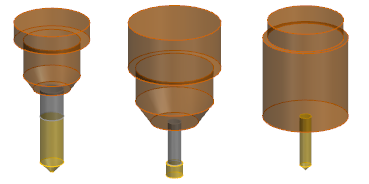

When you create operations for features, to reduce the number of tool changes, NX first tries to select library tools that are already used in the part file. If tools that match the requirements are not available in the part file, then NX retrieves them from the library.

|
Application |
Manufacturing |
|
Prerequisite |
You must start Manufacturing with the cam_general, feature_machining, or hole_making cam session configuration. |
|
Machining Feature Navigator |
Right-click the features→Create Feature Process |
|
Toolbar |
Feature toolbar→Create Feature Process |